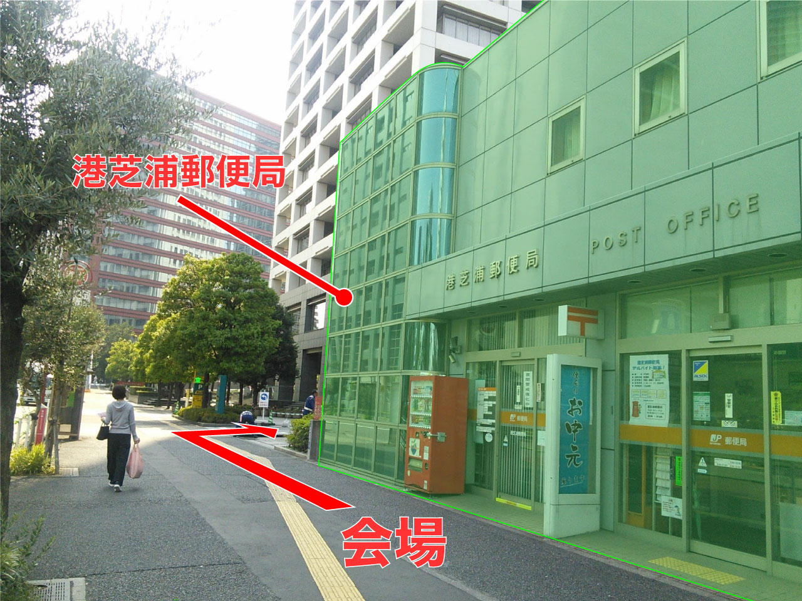
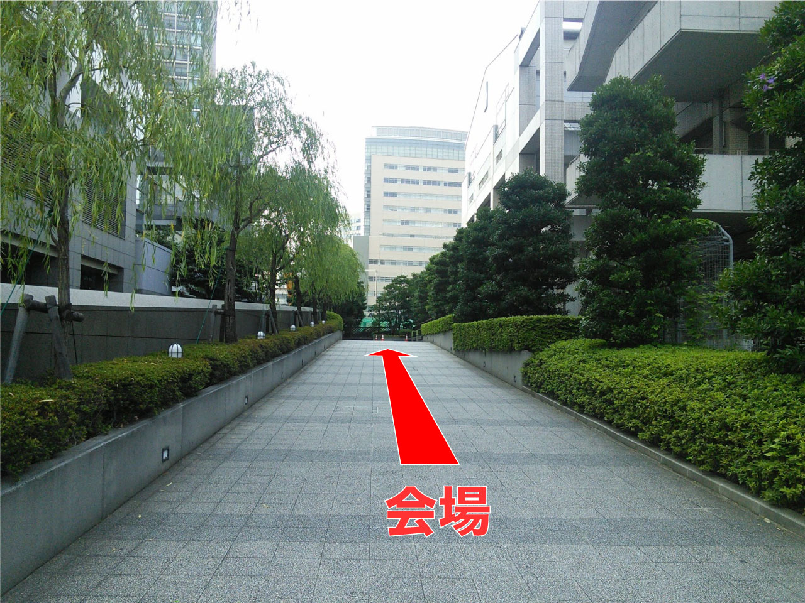

About
NTT Tech Conferenceは、NTTグループのソフトウェアエンジニアたちが一堂に会し、NTTグループ内外のエンジニアたちと技術交流を行うためのカンファレンスです。NTTグループ内には各種OSSのコミッタ、メンテナ、コントリビュータをはじめとしたソフトウェアエンジニアや、各社の様々な案件でシステム開発を行うエンジニアがおり、本イベントではそれらのエンジニアがもつノウハウや悩みをNTTグループ内外のエンジニアと共有・議論することで、参加者がもっとおもしろいエンジニアになることを目的としています。
Time Table
Time Tableを見たい会場を選んでください。- 301
- 302
- 303
技術系業務自動化のエンジン展示
Tableau+スクラッチでWEBアプリライクに可視化してみた
WebAuthnを用いた多要素認証の実現
Kibana Canvasでオシャレに可視化してみたリターンズ
LEGOで学ぶクラフト機械学習
- Level: 初級
- Tags: Machine Learning
Overview
流行りの機械学習をノンプログラミングで体験するプログラムです．
今回は分類問題に焦点を当てレゴを通して機械学習の原理と利用する際の注意点を学びます．
PoCを成功に導くためには営業系と開発系が力を合わせていく必要があるため，この研修を通して共通言語を獲得していただきます．
対象者
- 営業系の方
- 機械学習を始めた方/これから始める方
- マネージャー層で機械学習案件が必要となっている方

Kubernetes基礎
- Level: 中級
- Tags: Container
Overview
Kubernetesの初学者向けの基礎編

入門Kubeflow ～Kubernetesで機械学習をはじめるために～
- Level: 中級
- Tags: Container, Machine Learning, OSS
Overview
"Kubeflowは、Kubernetesの上に機械学習基盤を構築してくれるツールキットです。
2017年12月の「Kubecon NA」で発表されてから約3ヶ月に1度のアップデートが行われ、2020年1月にバージョン1.0のリリースを予定していますが、その機能やアーキテクチャについてまとめられている資料は少ないのが現状です。
本セッションでは、GKEで構築したkubeflowのバージョン0.4以降の検証結果を元に、これまでの発展の歴史を挟みながら最新のKubeflowについて紹介します。"
Coffee Break
- Level: ??
- Tags: Coffee
Overview
コーヒーやおやつを食べながら発表者へ質問する休憩時間です。
発表者が発表を行った部屋におりますので発表への質問や感想をぜひお伝えください。
また、展示なども行っておりますのでぜひ302会議室へ足をお運びください。React HooksとGraphQLで社内レガシーサービス巻き取ってみたらものすごくはかどった話
- Level: 中級
- Tags: Application
Overview
社内レガシーサービスの巻取り開発を行う際に、思い切って最新のfrontend技術を投入したところ、開発が非常に加速し3ヶ月でリリースまでこぎつけられました。
React HooksとGraphQLのecosystemと利便性が素晴らしかったので、開発で得られた知見とノウハウをご紹介します。
海外講演を通じて得られた知見(英語力＋α編)
- Level: 初級
- Tags: Engish, Global
Overview
海外講演をどう乗り越えてきたか？その後、英語力向上のために取り組んでいること、その他、大切にしていることなどをご紹介します。

Lightning Talk
- Level: 初級〜中級
- Tags: デザイン , Operation, OSS, Use Case, 心構え, Skills Development, Container, Network, Use Case, Cloud, Operation
Overview
Lightning Talkのセッションは以下の6つをお送りします。
- パワポをよくしただけなのに〜デザインの力で会社に貢献するチームの紹介 (NTTテクノクロス 鈴木 雅貴)
- アジャイル開発手法における監視システム開発効率化の取り組み (NTT 石田 瑛一)
- スタートアップチームで学んだエンジニアの心構え (NTT Com 松木 久幸)
- NTTデータのトップ技術者育成！「技統本塾」のご紹介 (NTTデータ 小泉 鉄之祐)
- Amazon EKS上でのVNF開発奮闘記 (NTT NS研 篠原 健太)
- Cisco ルータのログを Stackdriver に送って可視化してみた (NTT Com 田島 照久)
超高校級の攻撃-さよならEmpire-
- Level: 中級
- Tags: OSS, Security
Overview
"Powershell Empire"というOSSで提供されている攻撃ツールが2019年8月をもって更新終了となりました。
実際の攻撃集団も用いていたPowerShell Empireとは何だったのか？セキュリティを知ったかしてる人も知ったかしてない人も絶望の淵に叩き落すかもしれない攻撃ツールの世界の一端を実際に仮想環境でPowerShell Empireを使って、仮想環境内のWindows10を攻撃します。
※本ツールを使った攻撃を助長するものではございません。ツールを使ったことによる責任はご自身でとりましょう
※本セッションはの内容が外部に流出した際の社会的影響を考慮し、SNS等での具体的内容の発信、録音、写真撮影はご遠慮願います。
対象者
- 攻撃技術に対して興味のある方
あると好ましいもの
- 寛容な心
Showcase
- Level: -
- Tags: -
Overview
Showcaseのセッションでは以下の4つの展示を行います。
- 技術系業務自動化のエンジン展示 (NTTアドバンステクノロジ 綿貫 順一、出井 利尚、菅野 和貴、山室 翔)
- Tableau+スクラッチでWEBアプリライクに可視化してみた (NTTデータ 高橋 直道)
- WebAuthnを用いた多要素認証の実現 (NTT WT 能島 良和)
- Kibana Canvasでオシャレに可視化してみたリターンズ (NTTテクノクロス 川崎 裕香)


エンジニアのキャリアをレゴで考えるワークショップ
- Level: 初級
- Tags: レゴシリアスプレイ
Overview
レゴ®︎シリアスプレイ®︎は自身の内観をより深く考えるメソッドです。５年後の自身のキャリアをレゴの作品を通して考えていきます。
対象者
- 自身の職種がエンジニアだと思っている方なら誰でも
あると好ましいもの
- 新しいことにチャレンジしようと思う気持ちがあること
MLPerf Inference で比較するAIエッジデバイス
- Level: 初級
- Tags: Machine Learning
Overview
AIの利用が一般化する中、エッジでのAI実行環境として各社から小型のデバイスが発売されています。
AI向けハードウェアの性能評価を目的として"MLPerf"というベンチマークソフトが開発されていますが、特に推論性能評価向けである"MLPerf Inference"を用いて各社のデバイスの性能測定にチャレンジして得られた知見をお話します。1870件以上のカーネルの不具合修正に貢献した再現用プログラムを自動生成する試験自動化技術
- Level: 上級
- Tags: OSS, Security, Linux
Overview
"Linuxカーネルの試験自動化技術について話します。こちらの記載内容が近いです。
Coffee Break
- Level: ??
- Tags: Coffee
Overview
コーヒーやおやつを食べながら発表者へ質問する休憩時間です。
発表者が発表を行った部屋におりますので発表への質問や感想をぜひお伝えください。
また、展示なども行っておりますのでぜひ302会議室へ足をお運びください。Grafana Loki による Kubernetes ロギング ハンズオン
- Level: 初級
- Tags: Cloud, Container, Operation, OSS
Overview
"コンテナの数や配置が動的に変化しうるKubernetesの環境において、効率的にログ収集を行うにはどうすればよいのでしょうか。
このセッションでは、Prometheusと高い親和性を持つOSSのロギングツール「Grafana Loki」のハンズオンを通じて、Kubernetesのクラスタレベルロギングについて学ぶことができます。
クラウドネイティブな環境に不可欠となる「Observability」の概要の解説なども交えながら、Kubernetes初学者がより良いロギングについて考えるための基礎を身につけられることを目指しています。
対象者
- GCPの基本的な操作方法、およびKubernetesの代表的なリソースの名称/概要を理解していること"
Registration
NTT Tech Conferenceへの参加へは事前登録が必要です。
NTTグループのソフトウェアエンジニアと交流して、一緒に「もっとおもしろいエンジニア」を目指しませんか？
Access
Venue
田町グランパークカンファレンス （詳細はこちらをご参照ください）
Closest Station
- JR山手線 田町駅（徒歩5分）
- 地下鉄都営浅草線・三田線 三田駅
Address
東京都港区芝浦3丁目4-1 田町グランパーク プラザ棟3階
From 田町駅
- 
- 